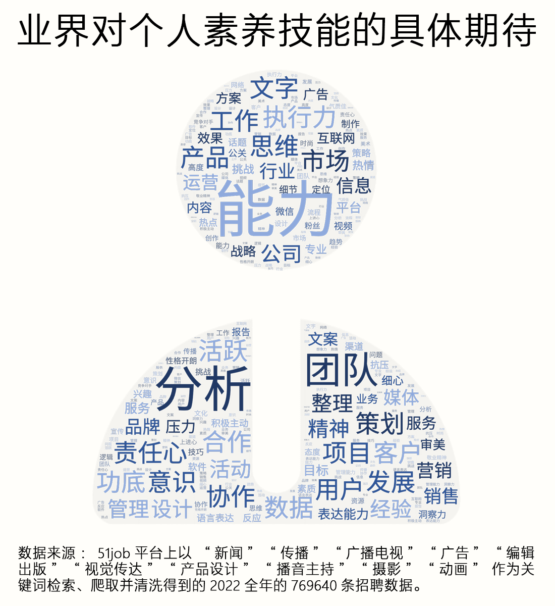

“别报新闻传播，”近期张雪峰在为一位刚高考完的学生提供专业填报建议时这样说，“不得不承认，学新闻传播的学生中有80%是没有从事本行业的，新闻传播在曾经是很好的专业，现在每个人都是自媒体。”
以上观点一出，便有部分新闻传播学业界人士提出反对并抨击，认为“未来的社会对传播人才的需求会一直旺盛”“虽然很多做自媒体的人并不是新闻传播专业，但这并不影响未来想做自媒体的同学，选择在本科学习新闻传播”……双方的观点在网络进一步发酵，引起了各类人士的大量讨论。
而在这些讨论声的背后，当前新闻传播就业的真实情况究竟是怎样的？为什么会有人认为新闻传播专业是天坑？新闻传播专业在当下还值不值得学习？这些问题值得更加深刻的思考和探索……
基于这些问题，我们从就业市场中与新闻传播类相关的近百万条全样本招聘数据中获取了 769640 条数据，利用数据挖掘技术和统计分析方法，并结合对多位新闻传播学业界人士的深度访谈进行分析，以期从客观数据和人物故事中揭开新闻传播专业本科生就业现状的面纱。

「很多人说新传就业难，但任何脱离社会背景、学历背景、实践经验下的结论，都是不准确的。」小红书网友 @喵一棵大树 作为一名本硕 7 年新闻传播专业的学子，面对互联网上普遍不看好新闻与传播就业前景的热潮，提出了自己的冷思。 @喵一棵大树 也分享了自己身边同学的毕业去向，除了考公，考编，就职于电视台、融媒体中心、报社等传统媒体以外，更多同学毕业后选择了互联网行业和广告行业，还有人毕业后选择了创业。
随着传播技术的突飞猛进，各种新媒体层出不穷，颠覆了人们生存、生活、生产的传统环境，闻风而动的市场自然也就对新闻传播学子提供了不同以往的职业可能。互联网的飞速发展使其成为了人们获取信息的主要来源，“酒香不怕巷子深”的时代已经悄然过去。 在新闻传播类专业的本科毕业生就业市场中，除了专业对口的传媒行业以外，各行各业均需要新闻传播专业的人才，尤其是一些市场活跃度较高的行业更需要新闻传播人才的加入，以帮助其进行传播。
从行业角度看，在新闻传播类专业的本科毕业生就业市场中，除了专业对口的传媒行业以外，各行各业均需要新闻传播专业的人才，尤其是一些市场活跃度较高的行业有着更为旺盛的新闻传播人才需求。通过对新闻传播就业市场的总体行业分布进行频数统计和频率分析，我们发现，以文字媒体 / 出版为代表的传统行业的用人需求仅占市场总需求的 1.42% ，排名第 19 位，传统媒体在互联网和新媒体的冲击下逐渐式微，其招聘人数在整个行业中相对较少。
同时，从上图可以看出，在用人需求排名前 10 位的行业中，与新闻传播密切相关的行业仅包含排名第 2 的影视 / 媒体 / 艺术 / 文化传播，以及排名第 4 的广告，其余的均为对国民经济贡献较高的行业。
从岗位角度看，可以发现与行业分布不同的是，与新闻传播专业对口的职能岗位需要大量的本专业毕业生，市场占比排名 10 的职能岗位中，有7个岗位与新闻传播专业非常对口，累计市场占比约为 55% 。而与行业分布相似的是，在就业市场中，绝大部分的新闻传播人才需求集中在职能岗位数量占比的“头部区域”，在全部的 72 种职能岗位中，排名前 15 的职能岗位数量占比接近市场总需求的 80% 。另外，除了与新闻传播专业非常对口的职能岗位外，新闻传播人才的需求还存在于大量非对口专业的职能岗位中，例如：销售人员（ 7.69% ）、行政/后勤（3.59%）、休闲娱乐（2.41%）、人力资源（2.24%）、教师（2.16%）、销售管理（2.02%）等岗位。
「从专业和实践角度来讲，新闻传播人是非常适合做marketing（市场营销）的。」
新闻传播科班出身的 @爱吃甜食的修狗 作为正在某快消品行业打工的mkt（市场营销）职场人，在公司主要负责品牌营销和沟通。在讲到了自己在快消品公司品牌营销岗的工作经验时，她认为在这个岗位所需的大部分技能都是本科新闻与传播类毕业生已经学习过的。从她本科的学习内容和目前的工作内容来看， @爱吃甜食的修狗 归纳了岗位的必需技能：审美和设计、视频拍摄技能、文案技能和活动组织策划技能。
“作为一个 mkter （市场营销岗位工作者），无论是做品牌还是产品，都绕不开一些新 tvc （电视广告） 和 kv （主视觉设计）的拍摄。对于身经百战做作业的新闻传播人，更知道怎么把握节奏和配乐以及画面镜头转换。”另外她还提到，“本科学习期间少不了的是各种文章的撰写和论文，以及很多同学都有做文案和编辑的实习经历，这是很有竞争力的。” @爱吃甜食的修狗 很看好新闻传播专业的本科生进入快消品行业就业的竞争力，对于自己目前跨行工作的前景也充满自信，这或许也是她当初选择快消品行业的底气和勇气来源。
在互联网和新媒体的冲击下，传统媒体不可避免地走向没落，在这样的社会背景下，新闻传播学子选择其他热门行业也是应时之举。在从新闻传播到公共传播的趋势下，多元化的就业市场也欢迎新闻传播学子在其他行业中发光发热。 如此，“学新闻传播的学生中有80%是没有从事本行业的”这句话，不仅不意味着新闻传播就业市场的式微，反倒说明新媒体的发展拓宽了新闻传播类学子的职业边界。

「我的专业并不是新闻传播类专业，据我所知，我的很多同事也都不是新闻专业毕业。」
拥有十年以上新媒体从业经历的王舒娴本科并不是科班，十年间，她先后在楚天都市报、荆楚网任职，从“刚来的时候不太清楚新闻怎么写”逐渐历练到到如今的脚力、眼力、脑力、笔力俱佳。在聊到新闻传播岗位招聘时，她表示很多媒体招聘人才时并没有要求应聘者一定是新闻专业的学生，特别是有一些专业性比较强的媒体，比如财经类媒体和面向普通市民的媒体的财经板块，这些媒体往往愿意招收经济专业的人才……在专业性较强的领域，对口专业的毕业生同样可以胜任这些岗位。
能够胜任新闻传播岗位的往往不只有科班出身的人才，其他专业的人也可以利用自己的专业优势对接新闻传播相应内容类型的岗位，王舒娴所说的这种情况在新闻传播行业一直存在。 传统媒体时期新闻内容涉及社会各个领域，工作中往往需要“新闻+”的知识储备，即除了新闻传播方面的专业技能之外，还应有所在领域的相关知识。 随着互联网的发展和融媒体时代到来，不仅其他行业需要传播， 闻传播本行业也发生了技术的革新和形式的丰富。 新 这进一步促进了这种人才需求趋势的进一步发展，新闻传播岗位需要的人才所涉及的专业从中文、英语、财经、体育，进一步扩展到对理工科人才尤其是计算机类人才的需求。
所以，在争取新闻传播的岗位时，科班出身的人才不仅需要和同专业的同学竞争，还要和其他专业的人才一起挤在新闻传播就业的这座独木桥上。除此之外，这种激烈的岗位竞争也存在于新闻与传播类专业内部的下级专业之间。 新闻传播类专业内部，各专业之间的就业方向存在界限不明显的情况。
可见，尽管传播学、新闻学、广告学这些新闻传播类专业之间的学术渊源不同，人才培养的目标和方式也不尽相同，但从就业的角度来看，这种差异就变得模糊起来，这背后体现了新闻传播教育并没有很好地根据市场的岗位需求进行人才的针对性培养。 不过，新闻传播行业是讲究实践的，新闻传播类院校的培养方式如果针对市场划分过细、在某个领域钻研过深，会忽略其他方面，更适合学术而非市场， 这仿佛形成了一种悖论。 播音、动画、摄影专业的学生是否就不需要学习新闻稿件写作？新闻学专业的学生是否就不需要学习摄影？本科教育如何更好地平衡通识和专业教育？人才的教育和培养是否应当完全为市场的需求服务？这些都有待进一步思考。

这么看来，什么专业都可以来新闻传播就业，这是就业的门槛变低了吗？
「虽然新闻传播专业的学生不求各方面精通，但是各方面要都大致接触过。」童舒在传媒领域从业近二十年，他认为，触类旁通、知识面广，是职场对新闻传播学生的职场期待。作为新闻传播学的人才需求方，就业市场既需要从业者的专业能力，也需要他们具备相当的个人素养。
在新闻传播行业，“新闻+其他领域”的工作模式一直存在，同时我们通过数据发现， 市场现在越来越喜欢六边形战士，对人才的技能要求变得更高，所以“门槛低”往往是并没有真正了解新闻传播就业现状的人的说法。
新闻传播业界需要从业者具备哪些技能？
如下图所示，我们将新闻传播从业者的技能分为 2 个大类、 4 个中类和 31 个小类。 在技能大类层级，常规型技能和适应型技能分别体现“硬实力”，后者体现“软实力”，从数据上看，两者在人才技能结构中的占比势均力敌，新闻传播类就业市场既强调从业者“硬核”的专业能力，同时也需要他们具备相当的个人素养。
在技能中类层级，传统类技能、创新类技能、个体类技能和交互类技能分别占比 13.32%、36.04%、32.68%、17.96%。
“硬实力”中的创新类技能在技能结构中的占比是传统类技能的近三倍，不可否认，传媒行业“采写编评”等“传统手艺”固然重要，但技术手段快速更迭，媒介形态日新月异，新闻传播的业态和招聘人才的需求也发生着深刻的变化；而在“软实力”中，个体类技能的需求近乎于交互类技能需求的两倍，因此，新闻传播人才除了需要拥有良好的沟通交流能力以外，更需强调自身的知识储备。
鼠标悬停查看对应技能描述
创新类技能中的内容策略，个体类技能中的个人素养和交互类技能中的市场营销在人才技能结构中占比明显高于其他技能。我们分别将其所在的招聘语句进行了统计和呈现，将业界的技能期待具体化。
如词云所示，最能代表内容策略的合理关键词是“策划”、“宣传”、“内容”等。尽管近年来，不同的媒介形态层出不穷，让人眼花缭乱，但在“内容为王”的年代，真正能够吸引用户，打动用户的依然是优质的内容，因而就业市场更加需要这一类优秀的新闻传播人才。
市场营销则强调个体与市场之间的交互能力，主要包括“市场销售”、“品牌营销”、“客户管理”、“电子商务”等方面。许多用人单位的工作职责中包括“品牌推广”、“营销策划”等内容，而这正是“广告”专业教学的重要组成部分，因此，在其专业诉求中特意强调需要广告专业的求职者。此外，新闻传播类专业的学生普遍具有良好的“文案策划”和“沟通交流”的能力，因而不少对市场营销能力有要求的岗位也会同时招聘“新闻学”、“传播学”等专业的毕业生。
个人素养主要包含求职者的性格和特质，在整个市场的技能结构中占比最高，“思维活跃”、“善于分析”、“执行力强”且富有高度“责任心”和“团队精神”的求职者更受用人单位的青睐。这一类技能往往不与特定的任务属性和应用场景相关联，因而有利于求职者适应不同的就业岗位和工作环境，从长远的眼光看待个体的职业发展，个人素养这一技能应是业界反复提到的且新闻传播学子所缺乏的“后劲”。

在就业市场中，用人单位对求职者的要求往往是多方面的。在绝大部分的岗位职责描述中，强调熟练或掌握一项技能的同时，也会要求求职者具备其他方面的知识储备或技术能力，这时被提及的技能就组成了一个个技能组合。
新闻传播就业招聘中最核心的技能是哪些？ 借助“共现矩阵”的概念，我们计算任意两项技能共同出现的概率，探求不同技能之间的紧密程度和处于中心地位的技能。了解这些有助于让我们了解不同技能之间的联系，从而找到能够胜任更多岗位的应聘者最重要的优势点在哪里。
由此可见，新闻传播的招聘者需要具备以软实力为核心，贯通传统类技能，再将创新类技能为点缀的“复合型”技能结构， 那么大概需要掌握多少技能才可以呢？
我们按照招聘类平台前程无忧官方给出的岗位分类标准整理出不同工作岗位对应的招聘广告，再根据招聘广告中的职位描述分别统计不同工作岗位的技能需求。由于在新闻传播学类的就业市场中，岗位工种的数量高达 72 个，我们选取岗位数量占比排名前 15 的工作岗位作为样本，呈现就业市场中不同工作岗位的技能需求。
由此可见，比起专才，目前新闻传播的就业市场更喜欢六边形战士，面对并没有降低反而是变得更高的就业门槛，其实也是对新闻传播教育提出了更高的要求。如何让新闻传播学子在本科学习中掌握核心技能，扩展技能体系，在日后步入职场时发挥出科班出身的优势。
童舒认为， “让行业中的人参与课程设置非常重要，但是不要被行业牵着鼻子走，较为纯粹的专业知识仍需学校教给学生，新传行业是讲究实践的，首先是没有短板，不要让学生因为过早地针对工作而变得势利。” 新闻传播专业的就业市场更青睐具备适应型技能的“通才”，提高自己的知识面和人文底蕴，则能够使得新闻传播专业毕业生有更为长远的业界前景。

“课程内容好浅、好广”“课好水好无聊”“课上学的东西没有用”……
在我们发布的样本总量为 673 的受访对象为新闻传播学专业学生的调查问卷中，超 50% 的学生认为，他们的写作能力、采访调查等传统类技能来源于课堂， 而创新类（例如多媒体技术、视觉设计、数据处理）、自主类（例如个人素养、职业道德、抗压能力）、交互类（例如领导能力、关系管理、市场管理）技能则都有超过 70% 的学生表示是来源于课堂之外。
在“哪些课外活动提升了你的能力”这一问题上，包括实习、社会实践等学习实践这一选项占比最高。超过 70% 的学生表示有过新闻传播相关的实习经历，有近 40% 的受访者实习时长达到三个月至半年。
就业最核心的适应性技能，在学校能够掌握的却并不充足，而是要通过实习实践来弥补。不仅如此，《新文科背景下新闻传播学本科专业人才培养研究》显示，通过对 59 家新闻传播院校培养方案的内容分析，发现样本高校的课程设置还存在各专业间区分度不显著、业务课设置以传统的新闻传播类业务课程为主，实践教学环节存在诸多不足、课程设置不够合理，知识杂糅重复的问题。
随着技术的进步和媒介形态的变化，就业结构随之改变，作为为国家就业市场输送人才的主阵地的高校，其教育并没有及时跟上变化，仍有许多问题需要完善。同时，对于新闻传播专业能够适应市场的技能，在传媒视频部门有二十余年从业经验的童舒表示：“（这些技能）更多的还是在实习中获得的，或者说其能达到精通的熟练程度多需要经过实习，学校教育更多的是知晓和理论。” 教室与职场之间的这段距离，一方面要靠高校来走，一方面则需要学生调动主观能动性进行实践，从实战中积累经验。
“课堂上关注的讨论是宏大的议题和抽象的概念，当我亲身走到现场时，专业实践让这些具象化。”本科学习新闻学专业的黄琦同学曾于大三在家乡的县级媒体实习，在聊到从学习到实践的感受时，她说到虽然在学校时学到了媒体的工作流程、相关概念和写稿等传统技能，让她在一开始实习时可以很快上手，但实践让她发现很多具体的操作都不是拘泥于书本的。比如稿件的文字处理会依据媒体的定位、面向的受众和文章的主题产生很多灵活的变化，这些书本之外的学习进一步丰富了自己的经验。
“学校学到的知识更多地是锻炼你的思维，有些知识其实是为以后打下功底的，即使不从事相关工作，但也会在你未来的工作中起到铺垫作用。”本科在莫纳什大学学习传播学的邹冰倩毕业后主要从事网络编辑的工作，后来单位开设了夜读栏目，在学校里学到的基础剪辑知识帮助他更快地了解这个方向的工作，并在之后的工作实践中进一步学习和提高相关技能。
所以，新闻传播还值不值得学？答案是肯定的。
一方面，我们应认识到新闻传播正在向信息传播或者公共传播的方向转变，其边界正在扩展，就业的方向也在变得多元。我们不应再以过去的眼光看待新闻传播就业，而是要拓宽该学科的职业想象，看到学科人才职业发展的更多可能。
另一方面，我们需要思考一个问题，衡量一个学科值不值得学，难道只有就业这一条准则吗？
张雪峰在连线一位需要本科毕业就工作的来自普通家庭的理科生时，提出了“不要学新闻”的建议。站在一位指导志愿填报和考研培训的老师的立场上，为一位正处于人生重要节点的学子提供一个稳妥且失误率低的选择，他的建议是合理的。但当这个观点脱离了当时的语境，就会发现其中的漏洞。
「教育的目的是育人而非制器。」
教育家蔡元培提出的观点在当今仍十分中肯。大学教育不只为了让学生成为在就业市场中拿到高薪工作的“胜利者”，还在于通过学校的平台让其认知的触角触及世界的更多角落，构建起属于自己的世界观、人生观、价值观，成为一个有学识、有想法且成熟的人。
同时，一个人的兴趣与理想也不应被抹杀，在就业之外，仍有其他意义值得我们去追逐。除了地上的六便士，也要不忘天上皎洁的月亮。
「当今时代，新闻传播具有前所未有的开放性，通过连接社会的各个系统、各类组织、各种群体甚至个体，发挥着不可替代的价值和效能。」
华中科技大学新闻与信息传播学院院长张明新在新生开学典礼的致辞中发表了他对“新闻传播在当今社会的重要变化”的见解。在时代的洪流下，学科交叉，就业多元将成为主流趋势，新闻传播教育和就业都将面临更多的可能。